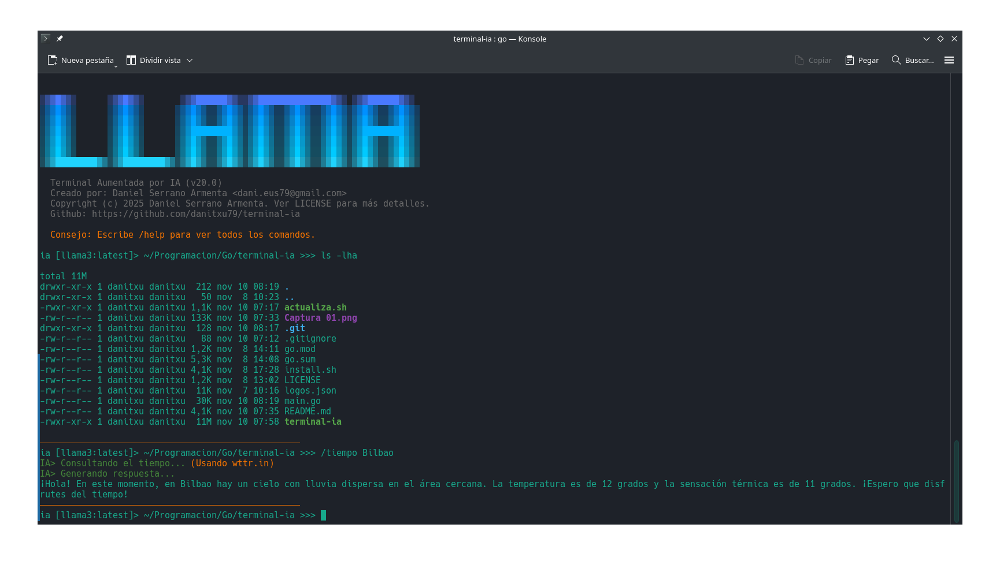
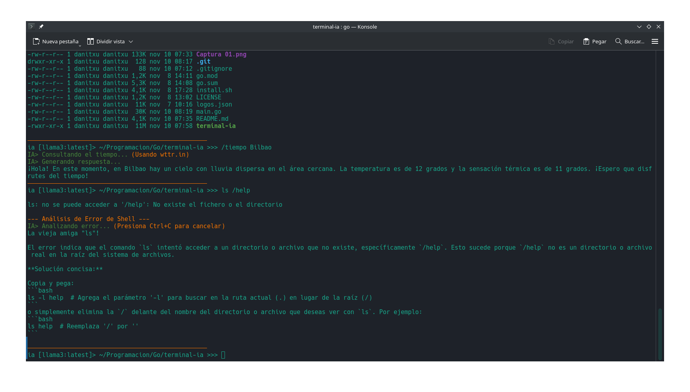

terminal-ia
terminal-ia es un innovador shell interactivo desarrollado en Go que transforma el lenguaje natural en comandos de terminal ejecutables. Aprovechando la potencia de los modelos de inteligencia artificial de Ollama, esta herramienta permite a los usuarios interactuar con su sistema operativo de una manera más intuitiva, traduciendo sus intenciones en acciones de línea de comandos de forma eficiente y segura.
Características Destacadas
- Interfaz de Lenguaje Natural: Escribe lo que quieres hacer en lenguaje humano y terminal-ia lo convierte en comandos de shell.
- Integración con Ollama: Utiliza modelos de IA locales para una interpretación inteligente y segura de tus solicitudes.
- Aprendizaje Adaptativo: Mejora con el uso, adaptándose a tus patrones de comando y preferencias.
- Soporte para Comandos Complejos: Capaz de generar desde comandos básicos hasta secuencias más elaboradas para tareas avanzadas.
- Seguridad y Control: Ofrece la opción de revisar y confirmar los comandos generados antes de su ejecución, garantizando la seguridad.
Capturas de Pantalla


← Volver a la página principal